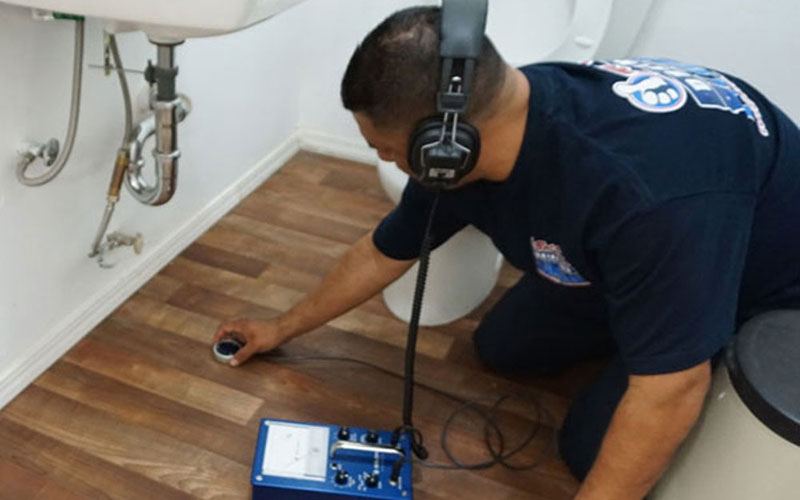
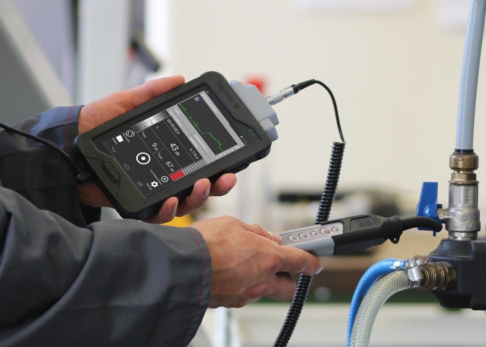

كشف تسربات المياه بالدمام
تقدم شركة أعمدة خدمة الكشف عن تسربات المياه بالدمام وحل مشكلة ارتفاع فاتورة المياه ،نوفر احدث
المعدات والاجهزة العالمية بدون الحاجة ألى تكسير وتدمير المنزل سنكتشف تسرب الماء بأذن الله بطرق جديدة
وموفرة وبأسعار منخفضة وبضمان معتمد من شركة أعمدة.

أفضل شركة كشف تسربات المياه بالدمام
تعد ظاهرة تسربات المياه مشكلة يعاني منها سكان المملكة وهي ظاهرة تحدث لعدة اسباب مثل وجود مشكلة بشبكة
المياه بداخل المنازل او المباني وخارجها وقد يكون ذلك السبب متعلقاً بوجود تأكل في خزانات المياه سواء
كانت مياة الشرب اومياة الصرف الصحي وعندما يحدث ذلك تتجه الناس للبحث عن افضل شركة كشف تسربات المياه
بالدمام وهنا نخبركم بأن شركتنا شركة تمتاز في ذلك التخصص وبضمان معتمد بالاضافة الى اسعارنا الممتازة
حيث نوفر عليك ايضاً خسائر التدمير والتكسير في منزلك او المبنى الخاص بك لأننا نكتشف التسرب المائي
بأحدث الأجهزة دون الحاجة لذلك التدمير فقط تواصل معنا وبأذن الله سنوفر لك خدمة ممتازة.

حل مشاكل تسرب المياه معنا شركة أعمدة كشف تسربات المياه بالدمام
يمكن للتسرب المائي أن يتغلغل داخل جدران المنازل والمباني والاسقف وذلك يحدث ضرر كبير في مكونات البناء
ويؤثر على سلامة المبنى الداخلية ومظهرها الخارجي أيضاً وقد تتكون بعض الفطريات والطحالب الخضراء ثم
تتأكل الدهانات وتتساقط مما يخرب المنزل او المبنى تخريباً تاماً وذلك بسبب تسربات المياة سواء كانت
عزبة او مياة الصرف الصحي وأيضاً الاضرار لاتكن في تدهور حالة المبني فقط وأنما تلك العميلة تنتج عنها
انتشار الحشرات والامراض ولذلك يجب عليك التواصل مع شركتنا
لكشف تسربات المياه بالدمام
وصيانتها
فيديو توضيحي لعمليات التسرب المائي المختلفة
مشكلة ارتفاع فواتير المياة وحلها مع شركة أعمدة
هذه المشكلة تعتبر من اكثر المشاكل الموجودة داخل المملكة حيث ترتفع الفاتورة بشكل ملحوظ اكثر من
المعتاد حتى إن كان الاستهلاك أقل من المسجل بفاتورة المياة وتلك الحالة عند ظهورها في فصل الشتاء يجب
علينا توخي حذرنا لان كلنا نعلم ان استهلاكنا للمياه في فصل الشتاء اقل كثيراً من فصل الصيف هذا يدل على
وجود تسرب مائي في منزلك او المبنى الخاص بك لذلك يجب عليك الارسال لنا كي نأتي ونكشف على المنزل كي لا
يقع في مشاكل أكثر من ذلك.
في حالة أكتشاف تسرب مياه فعلاً بواسطة الكشف عنها من شركتنا
في حالة إيجابية بعد تحديد مكان التسرب بواسطة الفني المختص يعرض على العميل عدة خيارات فيما يختص ترميم
وتجديد المبنى والقيام بالعمل المطلوب من الصيانة ونتجه لقسم
الترميم للمنازل
والمباني بالدمام في شركنتا وعرض الخلل الموجود فأننا فريق عمل نسعى لنوفر لك الخدمة مع
مراعاة الاسعار مع وجود ضمان في حالة حدوث امر ما بعد الصيانة يمكنك التواصل معنا وسنقدم لك خدمة تروق
لك